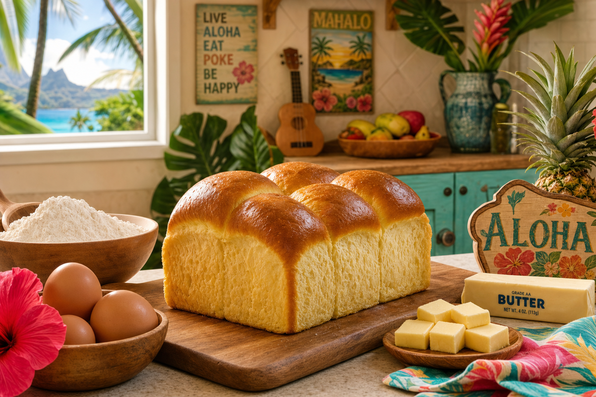

The Story of Hawaiian Sweet Bread
Hawaiian sweet bread — also called Portuguese sweet bread or pão doce — arrived in Hawaii in the 1800s with Portuguese immigrants from the Madeira and Azores islands who came to work the sugar plantations. They brought with them their tradition of enriched, slightly sweet bread, which blended beautifully with Hawaii's local ingredients and became one of the islands' most beloved staples.
What Makes It Sweet Bread
Unlike regular bread, sweet bread gets its character from eggs, butter, sugar, and sometimes milk — all enriching agents that give it a brioche-like softness, a golden crumb, and a gently sweet flavor. Traditional Hawaiian sweet bread also includes a small amount of potato, which adds moisture and a uniquely tender texture.
The Recipe (Simplified for Home Bakers)
This recipe makes two loaves and keeps well for 3–4 days.
Ingredients
- 4 cups all-purpose flour
- 1/3 cup sugar
- 1 tsp salt
- 2 1/4 tsp active dry yeast (1 packet)
- 3 eggs, room temperature
- 1/2 cup whole milk, warm
- 1/4 cup butter, softened
- 1/3 cup mashed potato (cooled)
- 1 tsp pure vanilla extract
- 1 tbsp local honey
Method
Combine yeast, warm milk (110°F), and 1 tsp sugar in a bowl. Let sit 10 minutes until foamy. In a large bowl, mix flour, sugar, and salt. Add yeast mixture, eggs, vanilla, honey, and mashed potato. Mix to a shaggy dough. Add butter in pieces and knead for 10–12 minutes by hand (8 minutes in stand mixer) until smooth and elastic.
Cover and let rise 1.5 hours until doubled. Punch down, divide, shape into two round loaves or rolls. Place in greased pans. Let rise another 45 minutes. Brush with egg wash (1 egg + 1 tbsp water). Bake at 350°F for 25–30 minutes until deep golden. Cool completely before slicing.
Lehua's Secret Touch
At Lehua, we use Big Island honey from our neighbor's hive and add a very small amount of coconut milk alongside the whole milk. It adds a subtle tropical note that makes our sweet bread distinctly Hawaiian. Try it yourself and taste the difference.